Mi scusi Gear — как пользоваться
Примерка гира, тату и баффов, точные статы и урон по любому классу — чтобы подготовить персонажа к PvP наилучшим образом.
Зачем
Чтобы понять, как одеть персонажа и сколько он бьёт, приходится одеваться в игре, собирать цифры с вики и считать формулы в голове.
Ошибка с SA, сетом или тату стоит адены и недель фарма. На глаз не понять, что сильнее: +2 заточки или другой SA, и сколько урона ты нанесёшь конкретному классу.
Примеряешь вещи, заточку, SA, камни, тату и баффы — и сразу видишь статы, урон по любому классу и что даст следующий шаг. Всё общее: что настроил один, видят все.
1. Верхняя полоса
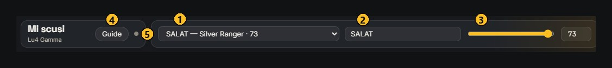
- Персонаж — по одному на каждый из 32 классов второй профессии, сгруппированы по расам.
- Имя — ник в игре, по желанию.
- Уровень — 1–75. От него зависят HP/MP/CP, статы и уровни умений.
- Guide — этот гайд.
- Точка — статус сохранения, текст — при наведении. Зелёная — сохранено и видно всей группе.
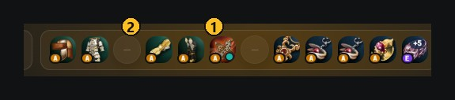
- Слот — клик — выбрать вещь, наведение — её характеристики.
- «—» — слот занят вещью на два слота: цельная броня, лук, двуручное.
2. Экипировка
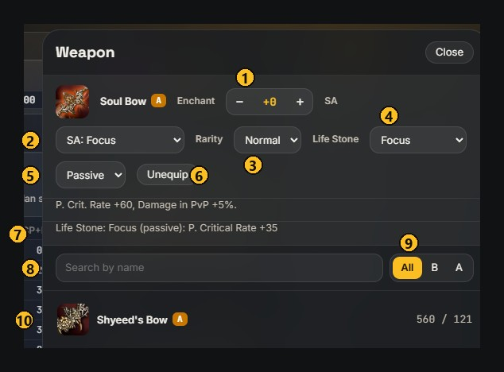
- Enchant — заточка +0…+16.
- SA — особое свойство оружия.
- Rarity — обычная или редкая версия вещи.
- Life Stone — умение камня жизни в оружии: Might, Empower, Focus, Wild Magic, Guidance, Duel Might, Refresh.
- Passive / Active — версия умения камня. Активная считается включённой всегда.
- Unequip — снять вещь.
- Эффекты — что даёт вещь и её камень.
- Поиск — по названию.
- All / B / A — фильтр по грейду.
- Строка — клик — надеть. Заточка переносится.
3. Статы
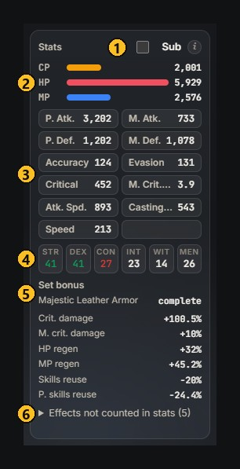
- Sub — Core of Magic из квеста на подкласс: Max HP +35, P. Def. +10, M. Def. +10. Подсказка — у значка ⓘ.
- CP / HP / MP — со всеми вещами, пассивками, кланом и баффами.
- Боевые статы — те же цифры, что в окне персонажа в игре.
- Атрибуты — зелёный — выше базы, красный — ниже.
- Set bonus — какие сеты работают и что дают.
- Effects not counted — эффекты, которые в статы не входят: шансовые и условные.
Насколько это точно?
Формулы — из закреплённой темы сервера «Математика и механики игры». Движок сверен с окном персонажа в игре и с тысячами расчётов по всем классам.
4. Тату
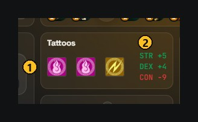
- Символы — три слота. Наведение — что даёт, клик — окно тату.
- Итог — сумма по атрибутам.
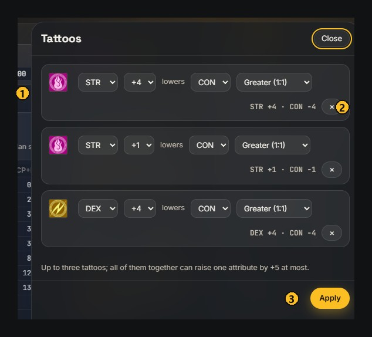
- Строка — что поднять, на сколько, что понизить, краска: Greater (1:1) или обычная (−n−1).
- × — очистить слот.
- Apply — применить все три.
5. Пассивки и клан
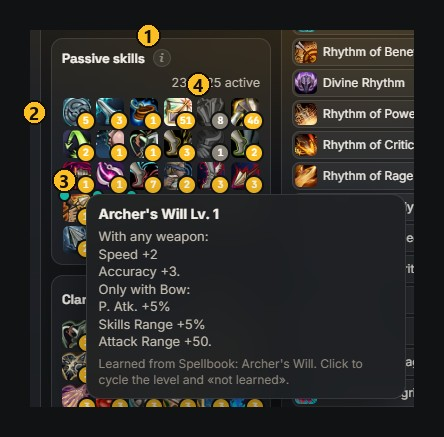
- ⓘ — как управлять.
- Иконка — клик — уровень выше, правая кнопка — ниже, наведение — описание. Янтарный значок — максимальный уровень, белый — выставлен вручную.
- Бирюзовая точка — пассивка из книги; в круг уровней входит «не выучена».
- Серая иконка — не работает с текущим оружием или бронёй.
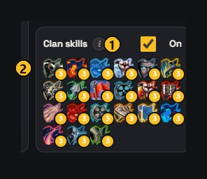
- Галочка — учитывать клан-скилы.
- Иконка — клик — уровень 1 → 2 → 3.
6. Урон
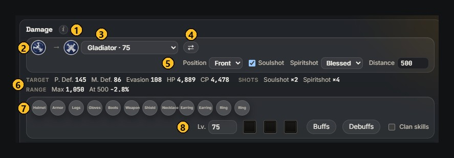
- ⓘ — что считается.
- Атакующий — персонаж из верхней полосы.
- Цель — любой другой персонаж.
- ⇄ — поменять местами.
- Условия — позиция, заряды, уровень зарядов у силовых и звуковых умений, дистанция — у лука.
- Цель и заряды — защита и HP/CP цели, множители зарядов, у лука — дальность.
- Гир цели — клик по слоту — то же окно выбора вещи.
- Уровень, тату, Buffs, Debuffs, Clan skills цели — всё, что влияет на её защиту.
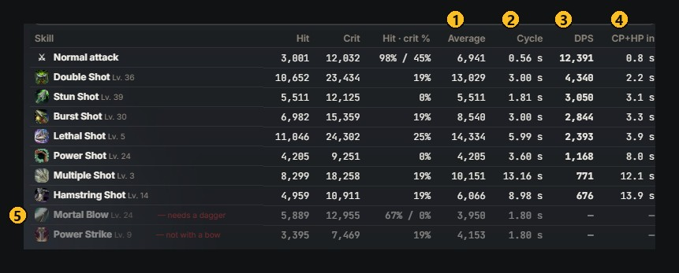
- Average — средний урон с критами, промахами, блоком и сопротивлением магии.
- Cycle — как часто можно бить: большее из перезарядки и каста.
- DPS — урон в секунду этим умением. Таблица отсортирована по нему.
- CP+HP in — за сколько секунд это умение в одиночку убьёт цель.
- Серая строка — умение недоступно с текущим оружием.
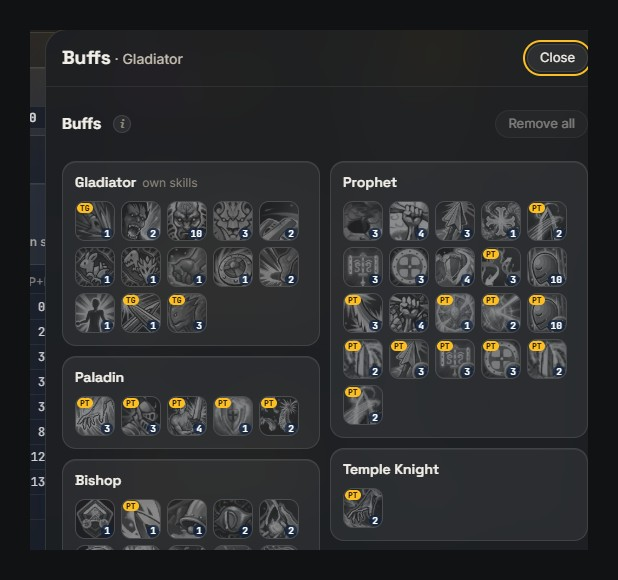
Кнопка Buffs у цели открывает её баффы, Debuffs — дебаффы на ней. Таблица пересчитывается сразу.
Что учитывается и что нет
Учитывается: атака и защиты обеих сторон, криты, PvP-бонусы, заряды и заточка, щит, сопротивление магии, уклонение от умений, позиция, заряды умений, шанс ударов кинжалом, дистанция лука, стихийные трейты, дебаффы на цели, откат умений.
Пока нет: атрибуты (атака и защита стихией — в том числе Dark Weapon), питомцы, регенерация.
7. Баффы
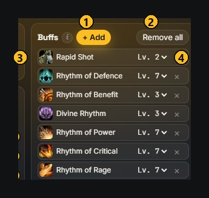
- + Add — все доступные баффы по классам.
- Remove all — снять все.
- Строка — включённый бафф.
- Уровень и × — сменить уровень или убрать.
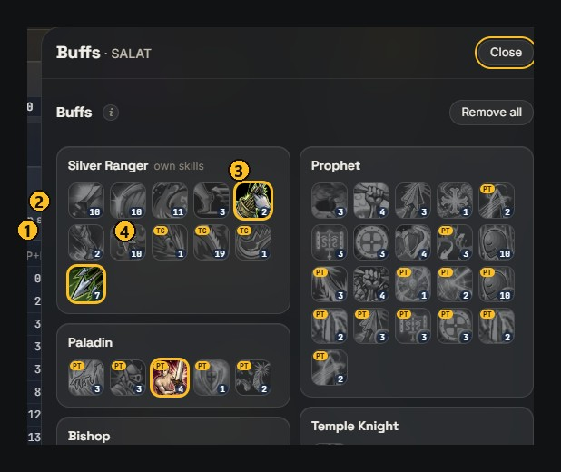
- Группа — свои умения и баффы, которые дают другие классы.
- Иконка — клик — включить или выключить, число — уровень, наведение — описание.
- Подсвеченная — включена и уже учтена.
- PT / TG — PT — на группу, TG — переключаемое умение.
8. Анализ
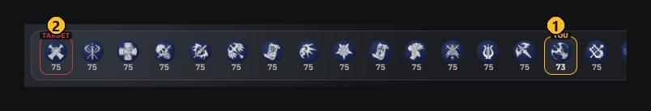
- YOU — выбранный персонаж. Клик по другому — открыть его.
- TARGET — цель. Правый клик по персонажу — сделать целью.
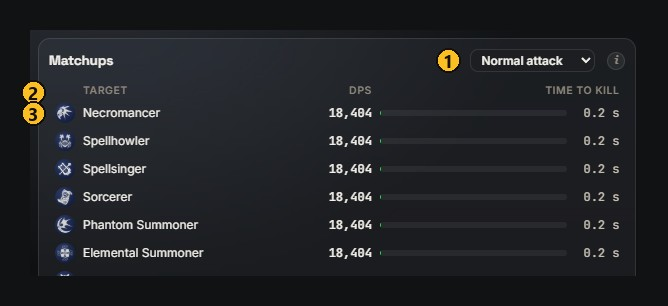
- Скилл — каким умением сравнивать; по умолчанию самым сильным.
- Колонки — DPS и время, за которое умрёт цель.
- Строка — клик — сделать целью. Зелёная полоска — быстро, красная — долго.
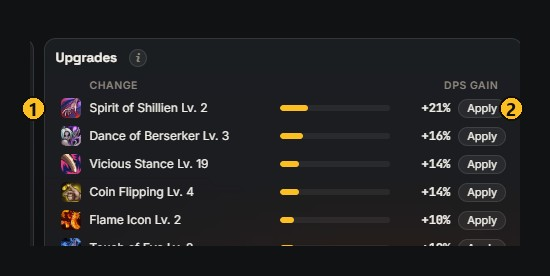
- Прирост — что сильнее всего поднимет DPS против цели: заточка, SA, редкая версия, камень жизни, тату, Sub, клан, недостающие баффы.
- Apply — сразу поставить на персонажа.
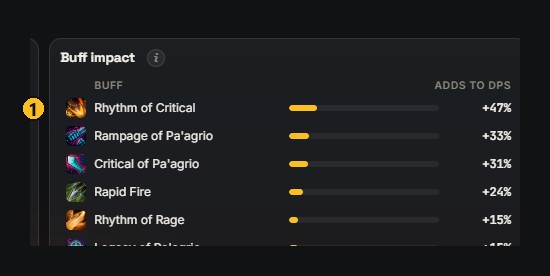
- Вклад — сколько процентов DPS даёт каждый включённый бафф. Серые с нулём — ничего не дают или перекрыты.
Вопросы
Где хранятся изменения?
В общей базе группы. Все видят одно и то же, правки приходят без перезагрузки.
Почему цифры чуть отличаются от игры?
Не учтены атрибуты и условные эффекты — они перечислены в «Effects not counted in stats». Нашёл расхождение — пришли скрин окна персонажа.
Что выгоднее улучшить?
Смотри панель Upgrades: она сама перебирает варианты и сортирует по приросту урона. Apply ставит выбранное.